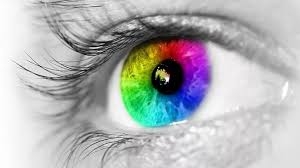
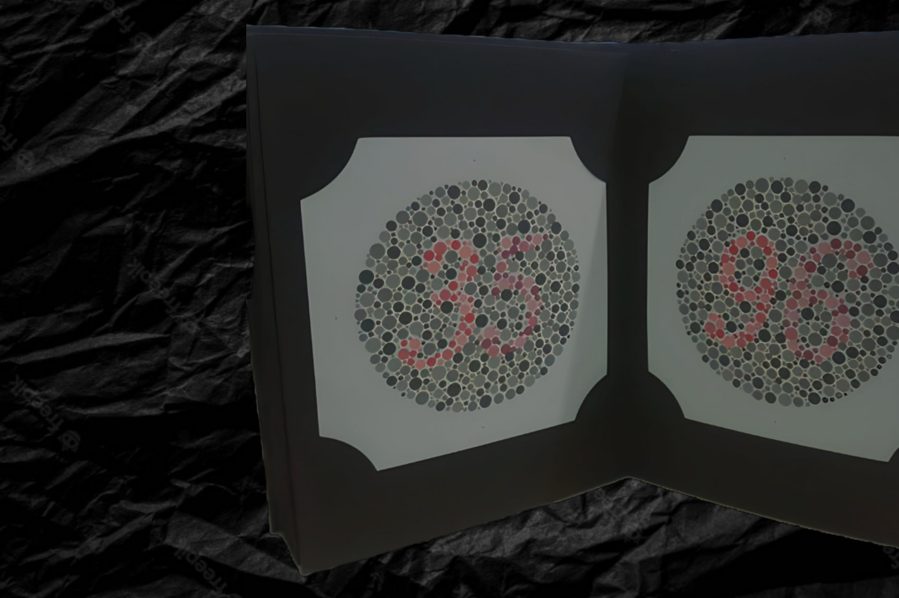
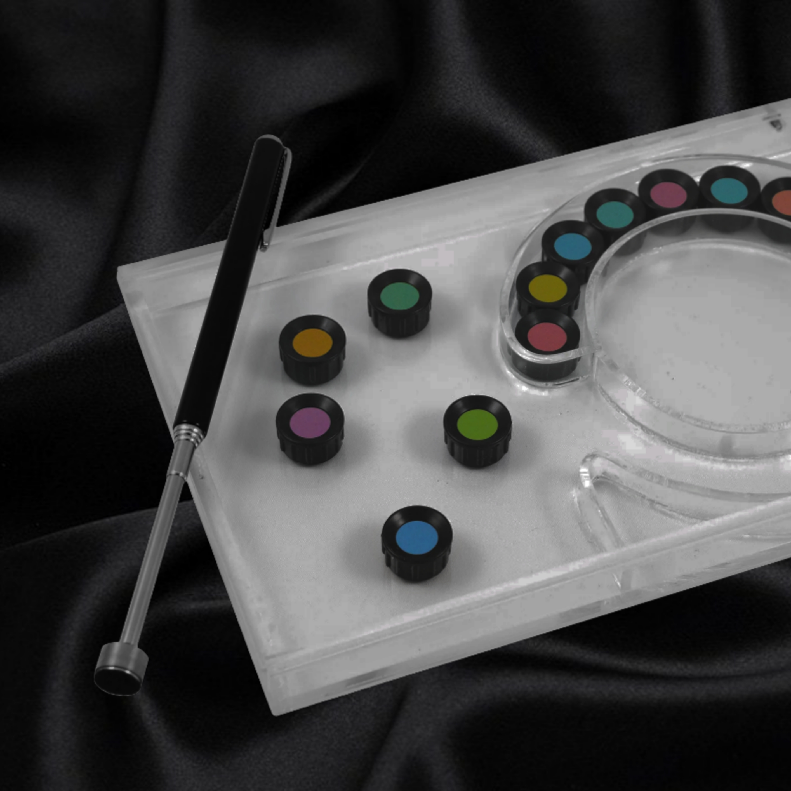
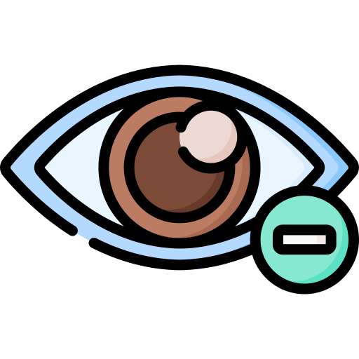

Modo Explorador con Figuras
Láminas amigables con estrellas, círculos, triángulos y corazones en lugar de números, junto al reto interactivo de encontrar la rana oculta y el juego de ordenar fichas de color.

Realizá pruebas orientativas de daltonismo adaptadas a todas las edades, probá nuestro simulador en vivo para ver como una persona daltónica y conocé soluciones reales de salud visual.
Los niños pequeños muchas veces aún no reconocen números complejos. Por eso creamos dos modos claros dentro de la misma plataforma.
Láminas amigables con estrellas, círculos, triángulos y corazones en lugar de números, junto al reto interactivo de encontrar la rana oculta y el juego de ordenar fichas de color.
Test de Ishihara clásico con verificación previa de brillo y pantalla, Test de Farnsworth interactivo (D-15 y 85 tonos), simulador con fotos propias o cámara y análisis genético.
El daltonismo es una alteración genética (en su mayoría ligada al cromosoma X) que afecta a los conos, las células de la retina encargadas de captar el rojo, el verde y el azul. Su nombre proviene del químico John Dalton, quien lo describió científicamente en 1794.
Déficit en conos M (verde). Los tonos verdes y rojos se confunden entre sí.
Probá cambiar la simulación en vivo:
Cada módulo combina explicación visual clara con herramientas prácticas para comprender la visión del color y el enfoque ocular.

Detección rojo-verdeConocé la historia de las 38 láminas creadas por Shinobu Ishihara y hacé la prueba online.

Ordenamiento cromáticoOrdená fichas de tonalidades sutiles en modo rápido de 15 fichas o completo de 85 tonos.
Cómo funcionan los filtros selectivos de longitud de onda, sus límites reales y cuidados.

Enfoque y prevenciónCausas, síntomas, tipos de miopía y un simulador interactivo de visión borrosa por dioptrías.